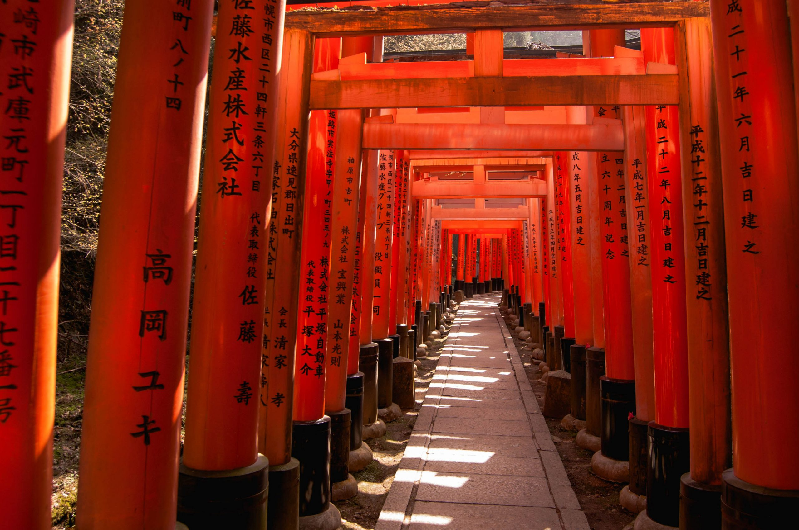

Stop 2: Kyoto
Kyoto was the imperial capital of Japan for over a thousand years. Today, it is celebrated for its thousands of Buddhist temples, gardens, imperial palaces, and traditional wooden houses.

The mesmerizing path of thousands of red Torii gates at Fushimi Inari Shrine.